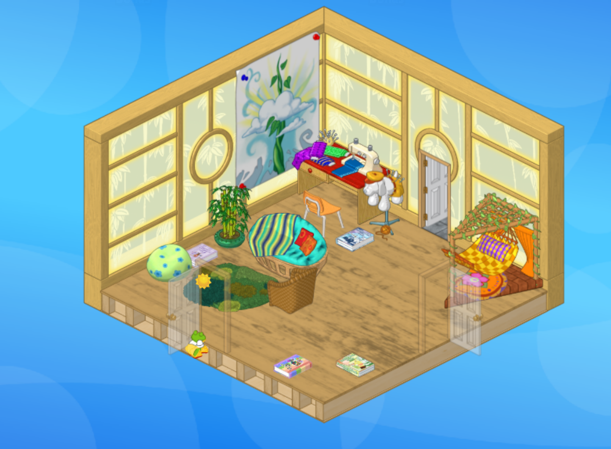
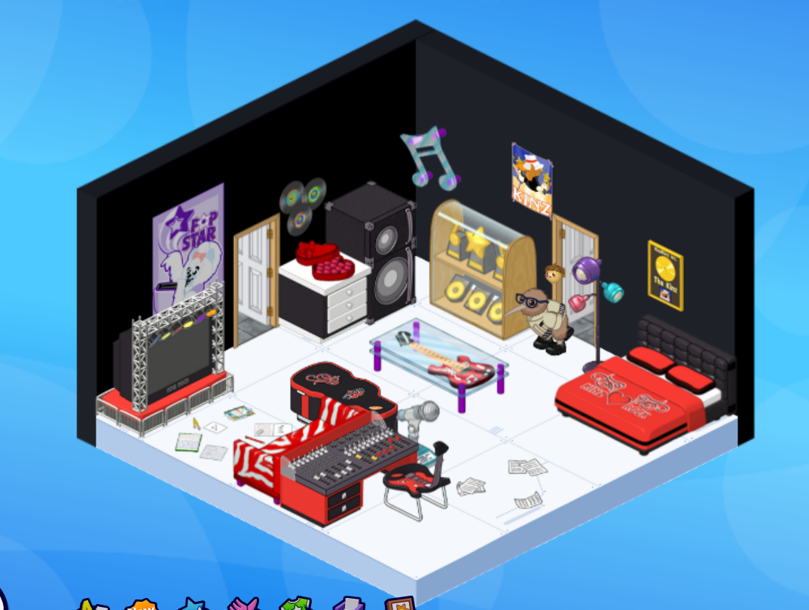
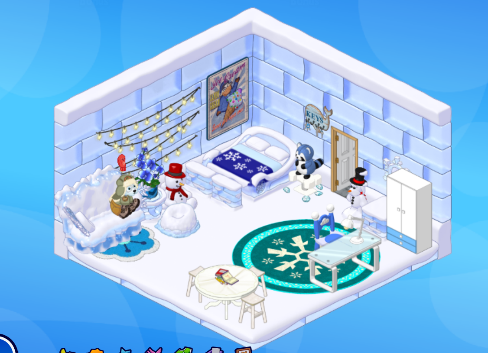
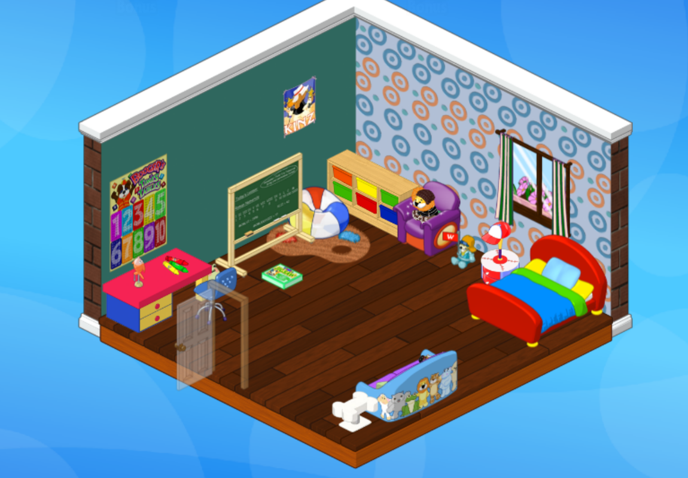
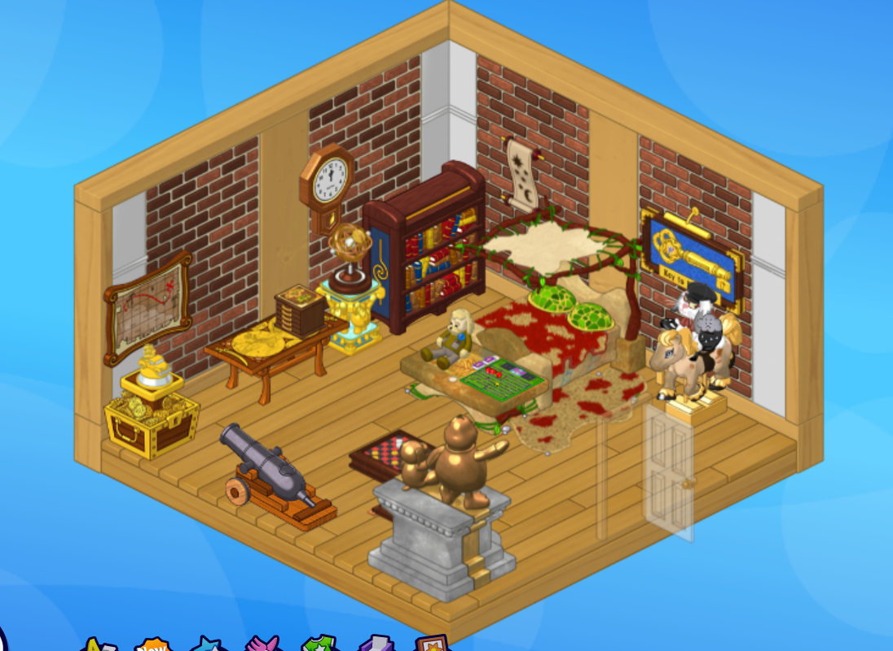
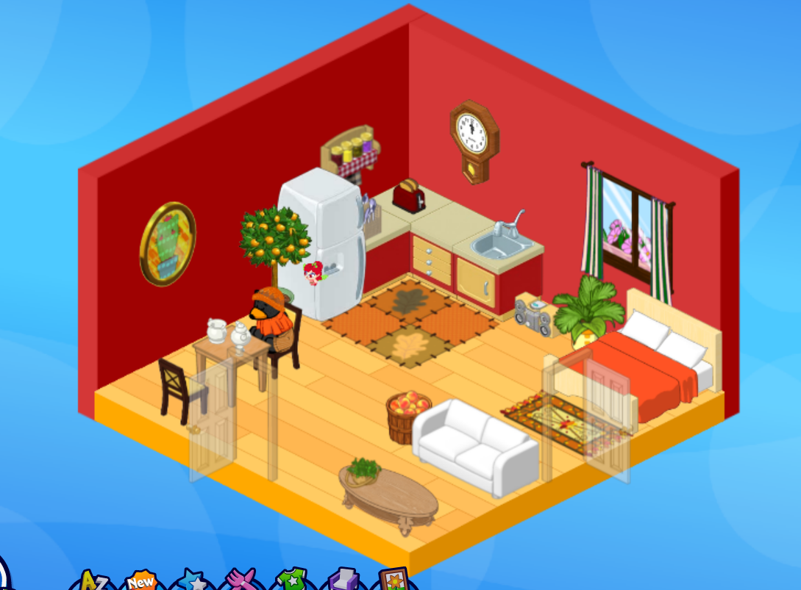

Clementine's room is inspired by her personality of a kind of hippy sewist. Scattered around her room are various DIY and sewing machine books for the Kinzville Outlet. The fact that Clem is a fashion designer is kind of ironic considering her model as a frog is one that makes the digital clothes look very unappealing.
The style of the room is very much boho inspired. I wouldn't consider this room to be finished as there's still a lot that can be added and I feel like there's too much dead space. I might want to add some items from this room design I found on Tumblr but a decent amount of the items are hard to find.

This room belongs to my pet Lucius. Despite him being a director, his room is very music themed and uses a lot of items from the Rock n Roll room theme. Which is a theme I really enjoy. I like how Lucius's room is seperate from his career. His backstory is that he's a secret music star (aka a really good music player) and a director as his main job. He likes being able to hide behind the camera.
Some things I'd like to note are the notebooks and paper scattered along the floor and the soundmixing table desk, which is probably one of my favourite items from this theme. I also really like the little box of heart chocolates I put on the counter by the speaker fridge, which I like to say is from a fan.
I went with a black and red theme but I didn't completely limit myself to those colours which I think helped with the realism as well - no one has a perfectly colour schemed room.

I made this room for my pet Gall Bladder. Pretty obviously I went with a winter/snow theme. I got the pet as part of a winter event and the pet itself is a snowy pup so I felt it appropriate. It also fits with Gall's everyday outfit, which you can see in the image here.
I really enjoyed making this room. It was a fun challenge to not just use all the items from the ice theme in the Kinz Shop. It also gave me an excuse to use some of the free items I have collected from playing games in the arcade, such as the flower rug (under the couch) and the flower plant (right of the couch). Another thing I want to point out is the Cash Cow Icecream poster up beside the bed and the (working) fairy lights you can turn on and off in the game.
I tried to make this room have more childish/fun vibes by including lots of seating (for friends to hang out in), homework (noteably not on the desk, but rather messily piled on the table) and a cute blue plushie beside the bed.

This room is my newest room and it's designed for my pet Misnomer. Misnomer is a lil kinz pet and so I am trying to make this room into a playroom for him and the other lil kinz pets. I'm planning to add bright, primary colours and plenty of stuffed animals, but as you might be able to tell, it's unfinished.
I want to put in a rug and maybe a small table with a game on it in the empty space and maybe a tv. I also made sure to add in a desk, chalkboard, and multiplication table to promote education as well as fun.
I like to think of this room as Misnomer's first room he gets as a child but will eventually grow up to change.

This was actually the first room I designed that wasn't just a copy of an already made theme bough from the Kinzville Shop! I think it's appropriate that it was made for the first pet I adopted on this account :)
This theme is heavily inspired by chaotic antique and curio shops, including Webkinz's own Curio Shop (owned and operated by my bestie Arte Fact ❤). There's a lot of artifacts, including a treaure map, Kinzville Key, a trophy, and even a box that shows your gem collection when you click it. One of my favourite little things about the room is the Arte Fact plushie and the Spree board at the end of the bed. Fun fact: Spree is my favourite daily activity and there was a time when I would log on just to play it, so having the board in my main pet's room became very convenient.
I kind of feel like you can tell it was my first time designing a room from scratch, but I definitely don't hate it. I feel like I could add or edit it, especially now that my item collection has grown and I might later on, but I'm also kind of attached to the idea of keeping it if only for the nostalgia. I might just end up making a whole new curio shop inspired room, but who knows!

This is a room I had a TON of fun designing! It ended up way different from the original plan but I like this one better.
The idea behind it is a studio apartment and I really feel like I captured that vibe. After I made the room, I completely redid Walt's outfit and personality to fit the room better.
I think the room ends up seeming a little fall or autumn themed but that really wasn't intentional. Walt just likes red and orange :)
A little fun fact is that there's supposed to be a tv on the table in front of the couch but I couldn't find one I liked. I also had a lot of trouble picking a couch and I'm still not 100% sure about this one bit it's the best one I could pick based off what was available
Note: You may have noticed that Artie doesn't have a room. This is because I have yet to design him one! For the longest time he simply slept outside in the "camp" room (seen on my other room design page), but I've since decided that doesn't suit him. I haven't had a ton of extra time lately to play Webkinz so Artie's room has been put on the back burner for now.
{kind=link}